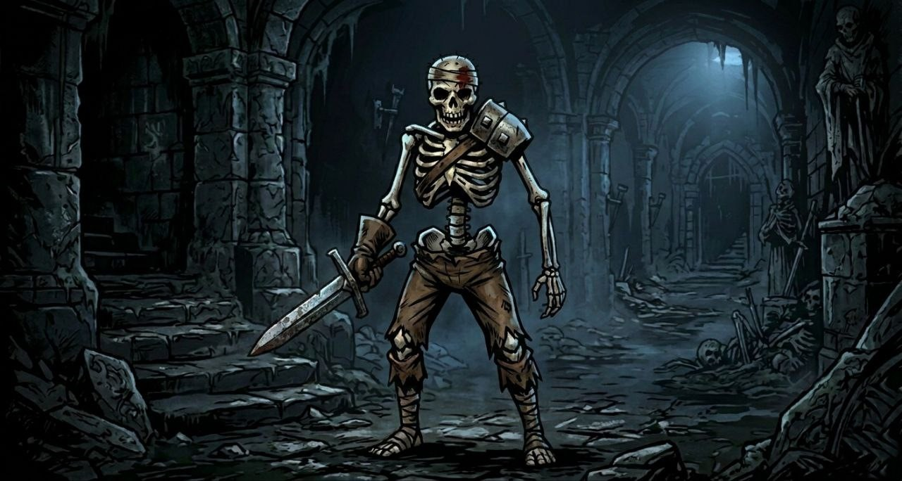
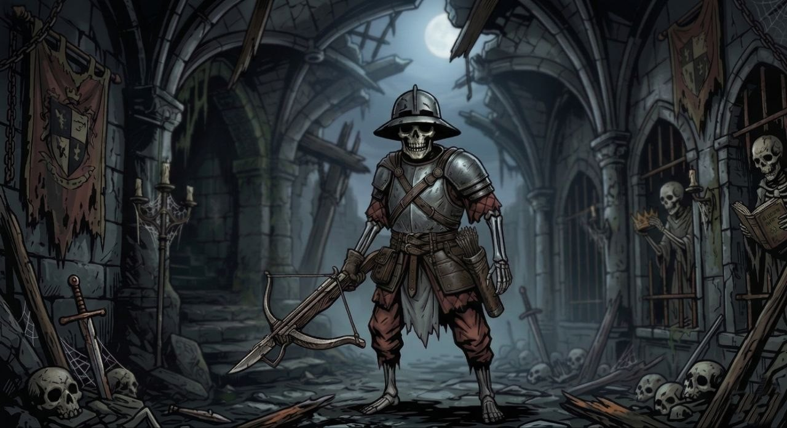
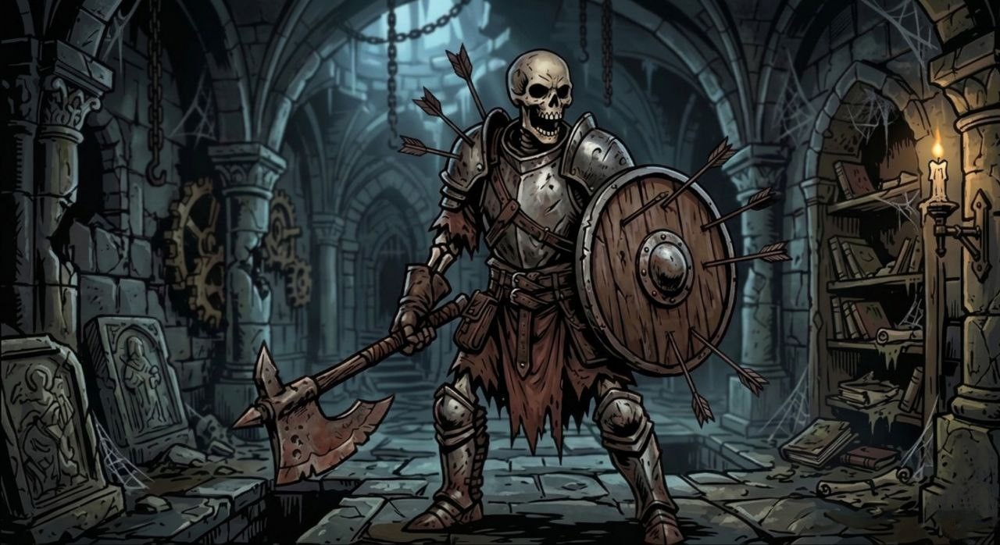
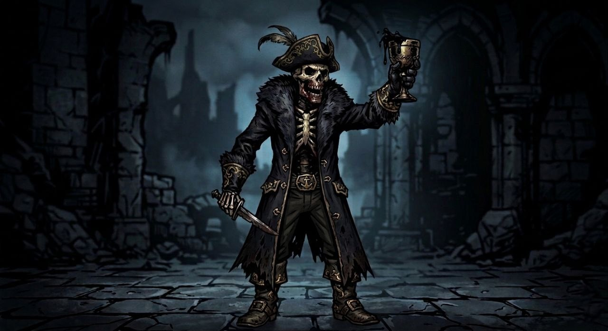

Тип: Нежить, Средний размер.
Характеристики: СИЛ 12 (+1), ЛОВ 14 (+2), ВЫН 12 (+1), ИНТ 6 (-2), МУД 8 (-1), ХАР 5 (-3).
КД: 12 ( Стальной наплечник и лахмотья ). ХП: 11.
Ржавый меч: Ближний бой (1-2 позиция), +5 к попаданию, урон 1d6 + 1 рубящего урона.
Особенность: Нежить. Иммунитет к кровотечению. Уязвимость к дробящему урону.

Тип: Нежить, Средний размер.
Характеристики: СИЛ 10 (+0), ЛОВ 16 (+3), ВЫН 12 (+1), ИНТ 6 (-2), МУД 10 (+0), ХАР 5 (-3).
КД: 14 ( легкий стальной доспех ). ХП: 15.
Выстрел болта: Дальний бой (3-4 позиция), +5 к попаданию, урон 1d8 + 3 колющего урона.
Удар штыком: Ближний бой (1-2 позиция), +3 к попаданию, урон 1d4 + 1 колющего урона.
Особенность: Нежить. Иммунитет к кровотечению. Уязвимость к дробящему урону.

Тип: Нежить, Средний размер.
Характеристики: СИЛ 14 (+2), ЛОВ 10 (+0), ВЫН 14 (+2), ИНТ 6 (-2), МУД 8 (-1), ХАР 5 (-3).
КД: 14 ( Тяжелый доспех и щит ). ХП: 15.
Удар топором: Ближний бой (1-2 позиция), +4 к попаданию, урон 1d8 + 2 рубящего урона.
Бремя мертвеца: Защищает союзника и усиливает себя в течении 2 раундов. Поглощает 2 ед. урона.
Особенность: Нежить. Иммунитет к кровотечению. Уязвимость к дробящему урону.

Тип: Нежить, Средний размер.
Характеристики: СИЛ 8 (-1), ЛОВ 14 (+2), ВЫН 10 (+0), ИНТ 12 (+1), МУД 10 (+0), ХАР 5 (-3).
КД: 12 ( Шелковые лохмотья ). ХП: 10.
Манящий кубок: Дальний бой (2-4 позиция), +5 к попаданию. Цель получает d12+2 ед. стресса.
Нож во тьме: Ближний бой (1-2 позиция), +3 к попаданию, урон 1d4 колющего урона.
Особенность: Нежить. Иммунитет к кровотечению. Уязвимость к дробящему урону.